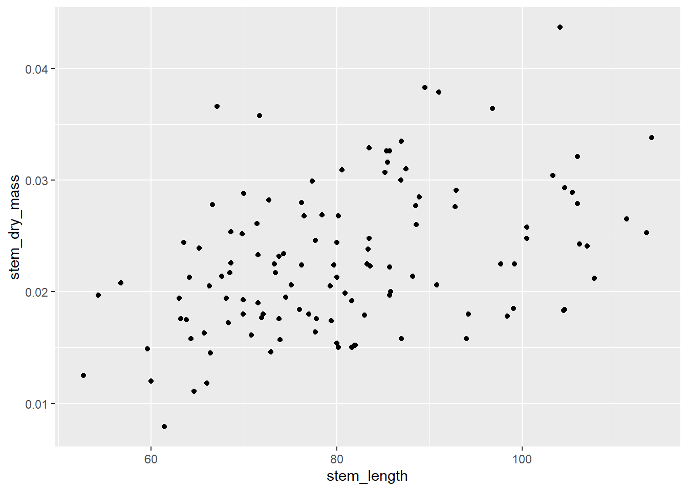
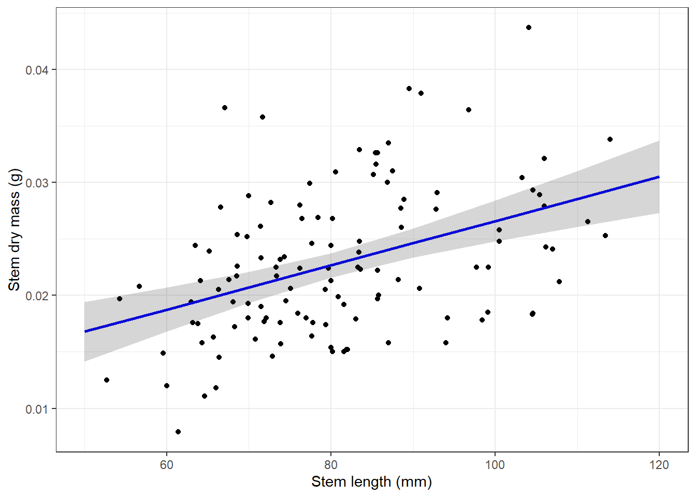

#install.packages("performance")
#install.packages("broom")
#install.packages("flextable")
#install.packages("ggeffects")
#install.packages("car")Week7workshopcode
#set up
# should haves
library(tidyverse)
library(here)
library(lterdatasampler)
# would be nice to have
library(performance)
library(broom)
library(flextable)
library(ggeffects)
library(car)view(hbr_maples)#linear models
#how does stem length predict stem dry mass
maples_data<-hbr_maples%>%
filter(year== 2003 & watershed == "Reference")
view(maples_data)#making the model
ggplot(data = maples_data, aes(x = stem_length, y = stem_dry_mass)) +
geom_point()
#checking the assumptions
modelobject <- lm(stem_dry_mass ~ stem_length, data = maples_data)
# par sets plot parameters and mfrow makes the viewer pane show a 2x2 grid of plots
# format: par(mfrow = c(number of rows, number of columns))
par(mfrow = c(2, 2))
# turns off the 2x2 grid - pop this under the code chunk where you set the 2x2 grid
dev.off()null device
1 plot(modelobject)Checking assumptions for linear model
- linear relationship between variables: yes (exploratory data showed this)
- independence of errors- yes (how data was collected)
- homoskedasticity- yes (residuals v fitted plot/scale-location plots)
- normally distributed errrors- yes (qqplot)
# extract model predictions using ggpredict
predictions <- ggpredict(modelobject, terms = "stem_length")
predictions# Predicted values of stem_dry_mass
stem_length | Predicted | 95% CI
--------------------------------------
50 | 0.02 | [0.01, 0.02]
60 | 0.02 | [0.02, 0.02]
70 | 0.02 | [0.02, 0.02]
80 | 0.02 | [0.02, 0.02]
90 | 0.02 | [0.02, 0.03]
100 | 0.03 | [0.02, 0.03]
110 | 0.03 | [0.03, 0.03]
120 | 0.03 | [0.03, 0.03]#making a plot of the predictions
plot_predictions <- ggplot(data = maples_data,
aes(x = stem_length, y = stem_dry_mass)) +
# first plot the underlying data from maples_data
geom_point() +
# then plot the predictions
geom_line(data = predictions,
aes(x = x, y = predicted),
color = "blue", linewidth = 1) +
# then plot the 95% confidence interval from ggpredict
geom_ribbon(data = predictions,
aes(x = x, y = predicted, ymin = conf.low, ymax = conf.high),
alpha = 0.2) +
# theme and meaningful labels
theme_bw() +
labs(x = "Stem length (mm)",
y = "Stem dry mass (g)")
plot_predictions
# store the model summary as an object
model_summary <- summary(modelobject)
# store the ANOVA table as an object
# anova(): special function to get analysis of variance tables for a model
model_squares <- anova(modelobject)
model_summary
Call:
lm(formula = stem_dry_mass ~ stem_length, data = maples_data)
Residuals:
Min 1Q Median 3Q Max
-0.0111253 -0.0039117 -0.0009091 0.0040911 0.0164587
Coefficients:
Estimate Std. Error t value Pr(>|t|)
(Intercept) 7.003e-03 3.212e-03 2.180 0.0312 *
stem_length 1.958e-04 3.909e-05 5.009 1.94e-06 ***
---
Signif. codes: 0 '***' 0.001 '**' 0.01 '*' 0.05 '.' 0.1 ' ' 1
Residual standard error: 0.005944 on 118 degrees of freedom
Multiple R-squared: 0.1753, Adjusted R-squared: 0.1683
F-statistic: 25.09 on 1 and 118 DF, p-value: 1.94e-06#making a table of the summary
model_squares_table <- tidy(model_squares) %>%
# round the sum of squares and mean squares columns to have 5 digits (could be less)
mutate(across(sumsq:meansq, ~ round(.x, digits = 5))) %>%
# round the F-statistic to have 1 digit
mutate(statistic = round(statistic, digits = 1)) %>%
# replace the very very very small p value with < 0.001
mutate(p.value = case_when(
p.value < 0.001 ~ "< 0.001"
)) %>%
# rename the stem_length cell to be meaningful
mutate(term = case_when(
term == "stem_length" ~ "Stem length (mm)",
TRUE ~ term
)) %>%
# make the data frame a flextable object
flextable() %>%
# change the header labels to be meaningful
set_header_labels(df = "Degrees of Freedom",
sumsq = "Sum of squares",
meansq = "Mean squares",
statistic = "F-statistic",
p.value = "p-value")
model_squares_tableterm | Degrees of Freedom | Sum of squares | Mean squares | F-statistic | p-value |
|---|---|---|---|---|---|
Stem length (mm) | 1 | 0.00089 | 0.00089 | 25.1 | < 0.001 |
Residuals | 118 | 0.00417 | 0.00004 |